Hej! 👋
Jag är en data- och systemvetare med en passion för att skapa intuitiva digitala upplevelser. Mitt mål är att växa som programmerare genom att kombinera min tekniska kompetens med min känsla för design och användbarhet. Jag trivs med att lösa problem och har ett öga för detaljer, vilket jag gärna bidrar med i ett kreativt team.
Utöver programmering är jag även intresserad av fotografering, vilket har stärkt mitt öga för visuell design och komposition.
Färdigheter

HTML5
Struktur för webbutveckling

CSS
Stilmallar för webbutveckling

JavaScript
Script och logik för webbutveckling
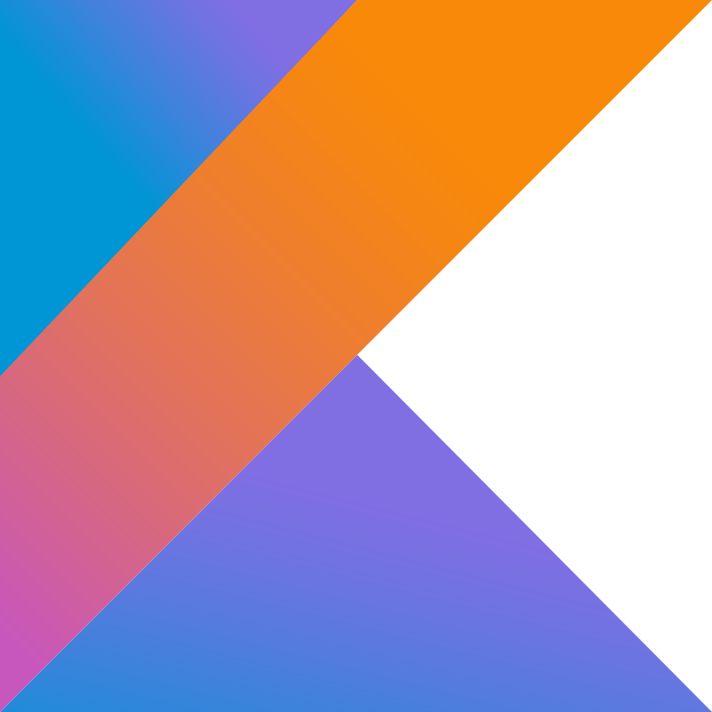
Kotlin
Apputveckling för Android
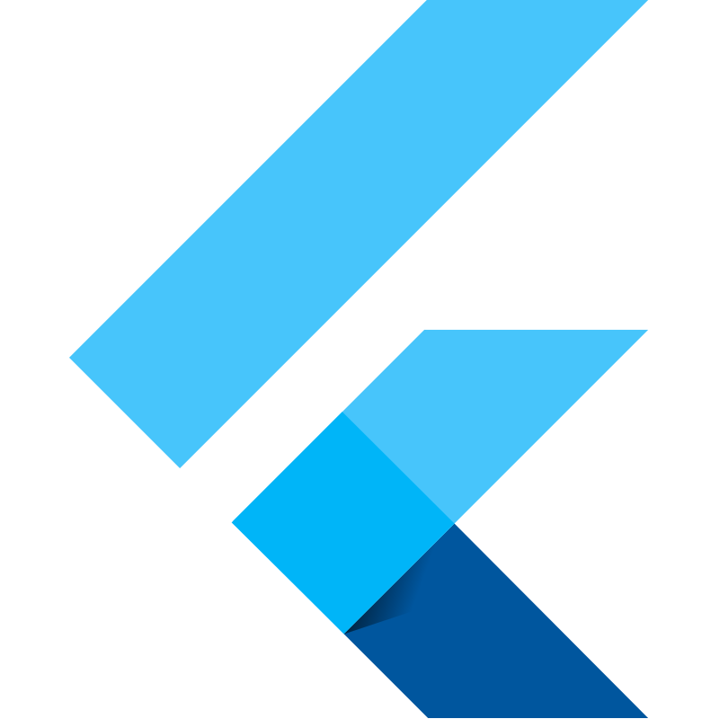
Flutter
Apputveckling för iOS och Android

Java
Objektorienterad programmering

React
JavaScript-bibliotek

Jetpack Compose
UI-ramverk för Android
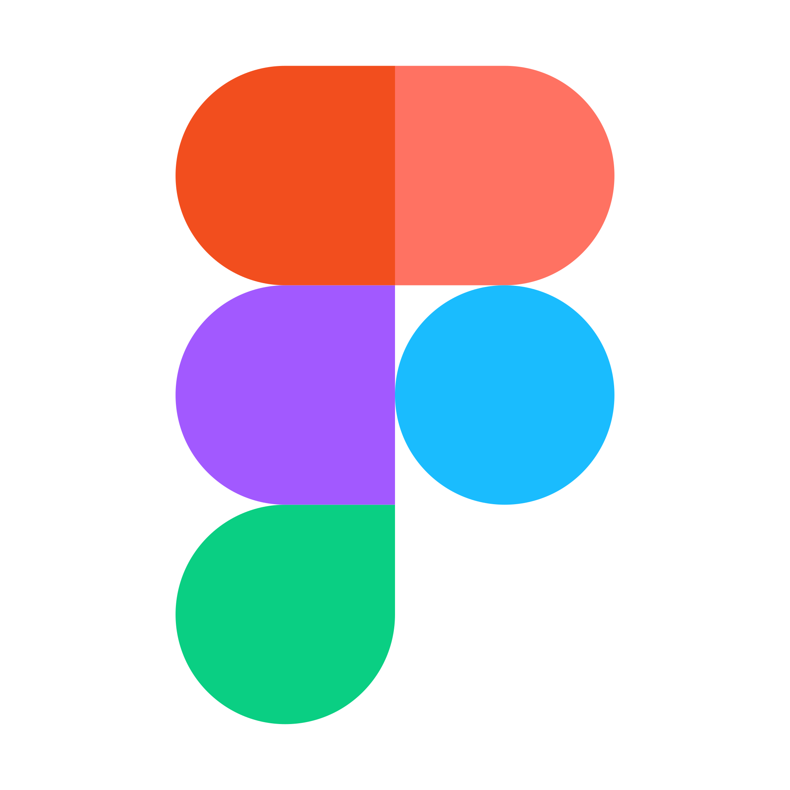
Figma
Designverktyg för UI/UX
Utöver de tekniska färdigheter som visas ovan har jag också erfarenhet från flera områden genom mina studier. Jag har gått kurser inom C#, SQL, objektorienterad programmering, prototyputveckling, sökmotorer, beslutstödssystem, informationssäkerhet, databasmetodik, assemblykodning, projekthantering med agila metoder, människa-dator-interaktion, IT-integrering i organisationer och mer.
Denna bredd gör att jag kan bidra i olika delar av ett projekt, från design och utveckling till problemlösning och systemförståelse.
Erfarenheter
ERR. 404: Tidigare jobberfarenhet inom programmering ej funnet..
Övriga tidigare erfarenheter:
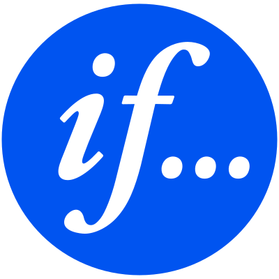
Service Desk Analyst
If Försäkringar AB
Jag hanterade över 1200 incidenter med verktyg som Azure, Active Directory och Exchange under två somrar, vilket krävde snabb problemlösning och stresstålighet.
I rollen ansvarade jag för att identifiera, felsöka och åtgärda tekniska fel, vilket bidrog till att upprätthålla driftsstabiliteten och minimera driftstoppens omfattning.
Genom att även optimera processerna för incidenthantering förbättrade jag arbetsflödet, vilket ledde till kortare svarstider och högre effektivitet inom teamet.
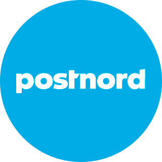
Paketchaufför
PostNord AB
Jag ansvarade för hantering, sortering och utkörning av paket på Södermalm.
Arbetet utfördes mestadels självständigt och under tidspress, vilket stärkte min förmåga att prioritera effektivt.
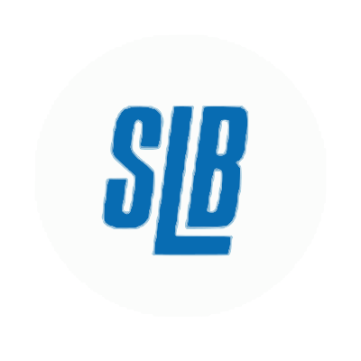
Systeminstallatör
Sören Lundgrens Byggkonsult AB
Jag ansvarade för driftsättning av nya datorer, vilket effektiviserade arbetsflödet och förbättrade den tekniska infrastrukturen i verksamheten. Detta innefattade installation av operativsystem och nödvändig programvara, samt mer specifik användaranpassning.
IT-praktikant
Macrent AB
Jag lärde mig grunderna i datorreparation och fick en inblick i arbetsflödet på en IT-avdelning.
Utbildning
Data- och systemvetenskap
Stockholms Universitet
Data- och systemvetenskapligt kandidatprogram.
Kurser i objektorienterad programmering, programmering för mobiler och webb, prototyputveckling, sökmotorer, beslutstödssystem, informationssäkerhet, databasmetodik och mer!
Se betyg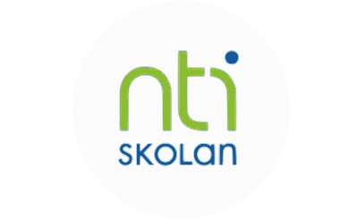
Programmering i C#
NTI-skolan
Programmeringskurs i C-sharp (C#)
Ekonomi, inriktning juridik
Tullinge Gymnasium
Ämnen i företagsekonomi, privatjuridik, affärsjuridik och mera.
Vinnare av årets bästa gymnasiearbete 🏆
Projekt
Här listas några projekt jag har skapat, mer info om specifika tekniker och funktioner finns i respektive projekts README-fil på Github!
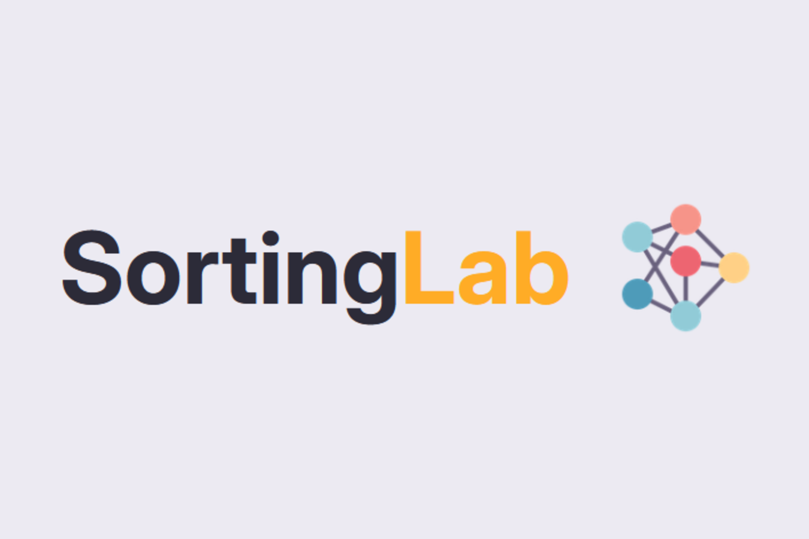
SortingLab - Om sorteringsalgoritmer
SortingLab är ett interaktivt, spelbaserat verktyg som hjälper studenter att lära sig sorteringsalgoritmer på ett engagerande sätt.
Genom att förvandla teoretiska sorteringsmetoder till praktiska utmaningar med poäng, liv och tidsbegränsningar gör SortingLab inlärningen både rolig och effektiv.
HTML
CSS
JavaScript
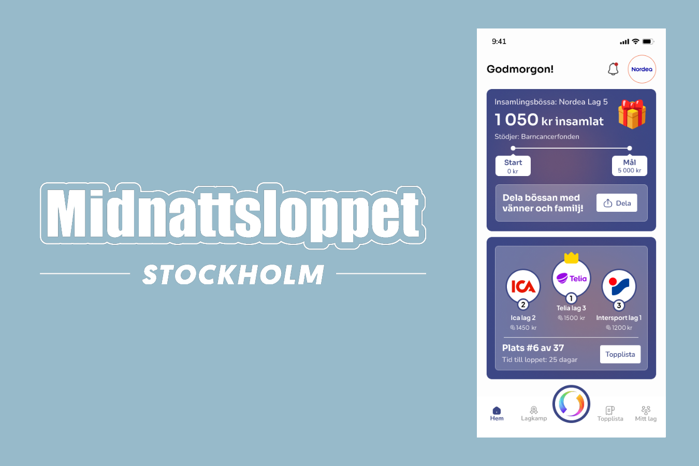
Midnattsloppet Fortal - För företag
Ett projekt skapat i samarbete med Midnattsloppet för att kombinera löpning och välgörenhet. Appen gör det möjligt för företag att skapa lag, samla in donationer till valda organisationer via swish, utmana andra lag och följa insamlingsresultat via topplistor och notifikationer – allt för att öka engagemang och bidra till en god sak.
Byggd i projektgrupp på tio personer med Flutter och HTML+CSS för frontend och Java med MariaDB, Tomcat, Jenkins för backendhosting.
Java
 MariaDB
MariaDB
 Tomcat
Tomcat
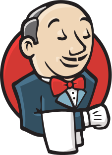
Jenkins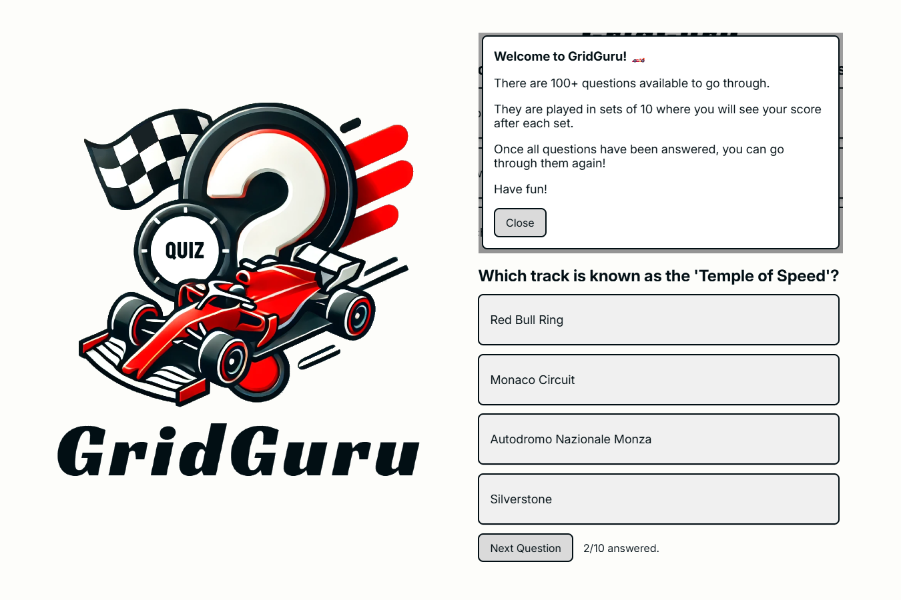
GridGuru - Formel 1 Quiz
Quizzen har en spelstruktur där frågorna spelas i set om 10, och användaren får sina poäng efter varje set.
Vinnare för design i kursen Webbutveckling 2 på Stockholms Universitet 🏆
HTML
CSS
JavaScript
 PHP
PHP
 MySQL
MySQL
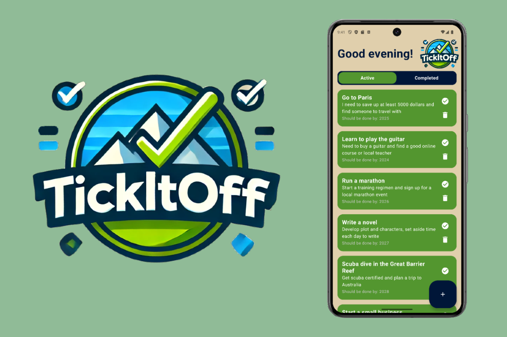
TickItOff - Bucket-list app
Byggt med Kotlin/Jetpack Compose och implementerar notiser, social media integration, animationer och mer.
Vinnare av bästa individuellt utvecklade appen i kursen Programmering för mobiler på Stockholms Universitet 🏆
Jetpack Compose
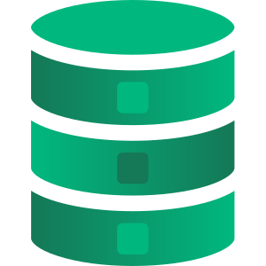
Room DB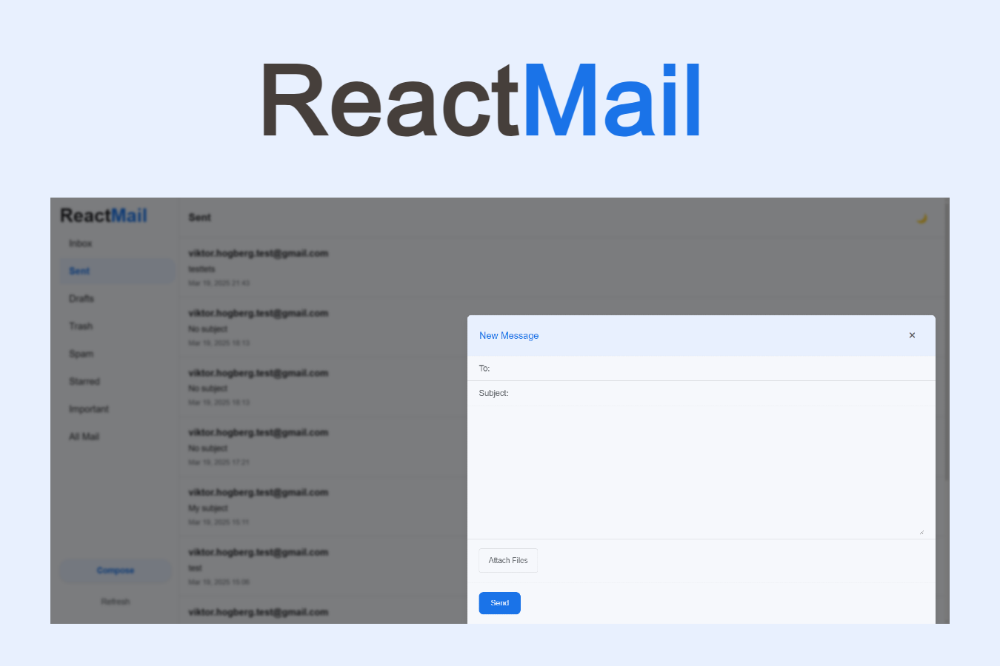
ReactMail - En mejlklient
E-postklienten erbjuder ett fungerande gränssnitt där användare kan skicka och ta emot meddelanden samt hantera bilagor genom uppladdning och nedladdning.
Meddelanden organiseras i mappar som inkorg, skickat, papperskorg och utkast, i linje med andra moderna e-postklienter.
React
CSS
JavaScript
Java
 Spring Boot
Spring Boot
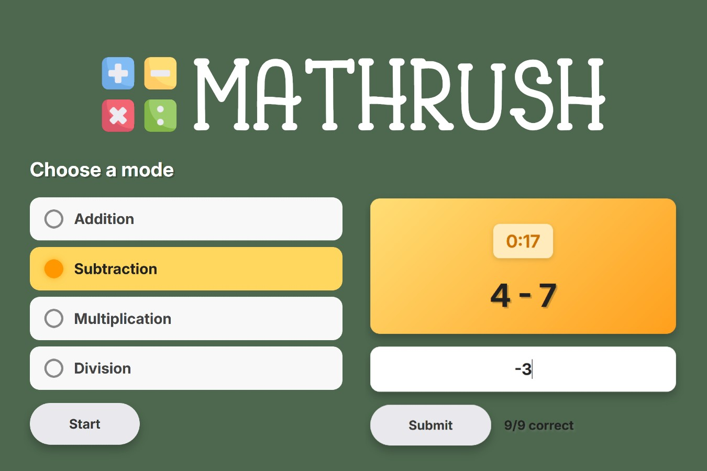
MathRush - Matematik på tid!
MathRush är ett fartfyllt matematikspel där du har 60 sekunder på dig att lösa så många matteproblem som möjligt.
Välj mellan addition, subtraktion, multiplikation eller division och utmana dig själv för att sätta nya rekord!
HTML
CSS
JavaScript
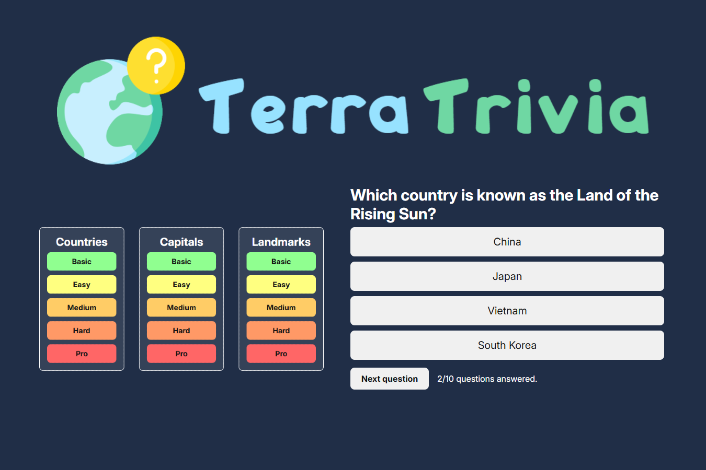
TerraTrivia - Ett geografispel
TerraTrivia är ett frågesportsspel som testar din förmåga i geografi!
Frågorna är uppdelade i tre stycken kategorier: länder, huvudstäder och landmärken.
För varje kategori finns fem stycken svårighetsgrader, totalt finns det över 150 frågor att svara på. Lycka till!
HTML
CSS
JavaScript
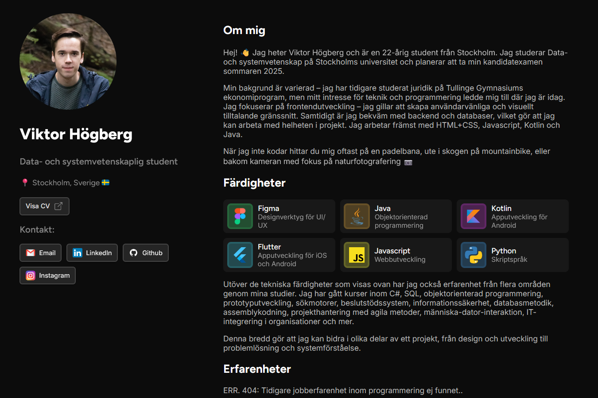
Portfölj - Denna portföljehemsidan
Byggt från scratch med endast HTML+CSS och vanilla JavaScript (inga frameworks eller andra bibliotek använda).
HTML
CSS
JavaScript
Rapporter
Här presenteras ett urval rapporter från min utbildning, som omfattar både vetenskapliga arbeten och projektrelaterad dokumentation med fokus på utvecklingsprocess och teorianknytning.
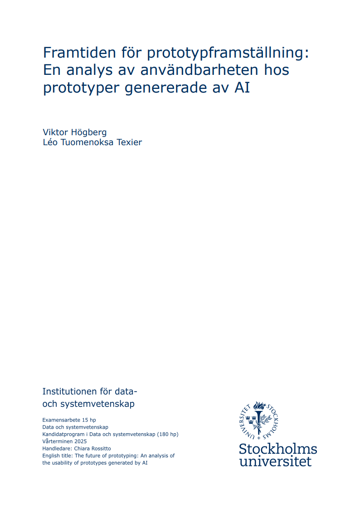
Examensarbete
Undersökte hur användbarheten upplevs i prototyper som genererats av AI-verktygen Uizard och Visily utifrån samma textbeskrivning.
Genom användbarhetstester, SUS-enkäter och intervjuer visade resultaten att båda prototyperna uppnådde låg användbarhet, med många misslyckade uppgifter och kritiska incidenter.
Studien drar slutsatsen att AI-verktygen i nuläget inte kan ersätta mänsklig kompetens i designprocessen utan fortsatt behöver kompletteras med mänsklig inblandning.
Öppna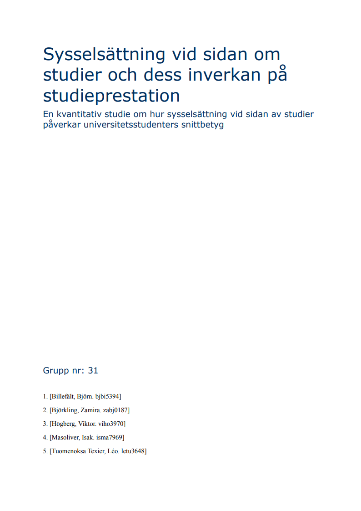
Sysselsättning vid studier
Undersökte hur studieprestation hos studenter vid Stockholms universitet påverkas av sysselsättning vid sidan av studierna.
En enkät besvarad av 189 studenter visade att det inte fanns något signifikant samband mellan studieprestation och anställningsgrad, ålder eller typ av sysselsättning.
Studien rekommenderar vidare forskning med större och mer varierade urvalsgrupper för att kunna upptäcka eventuella samband.
Öppna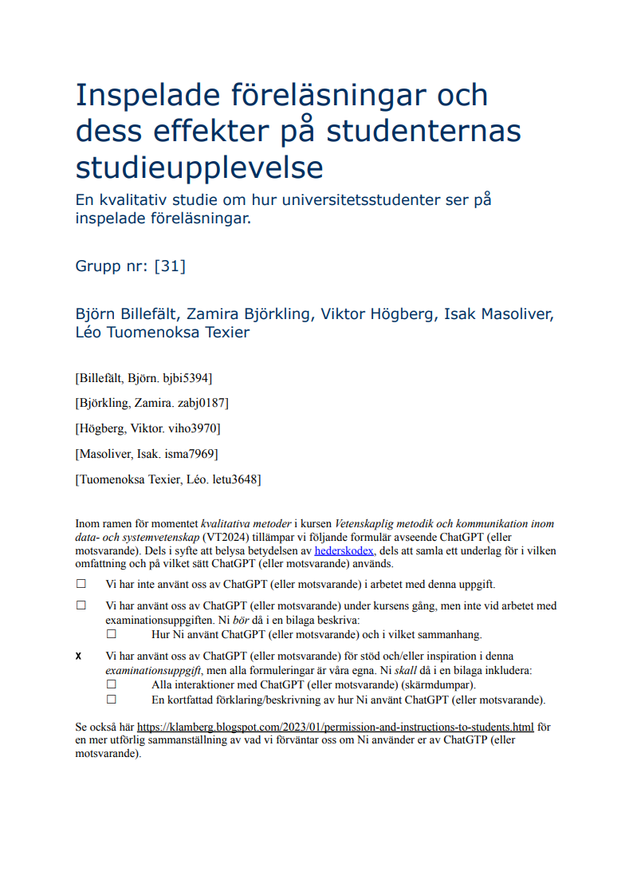
Inspelade föreläsningar
Undersökte hur universitetsstudenter i Sverige uppfattar inspelade föreläsningars relevans för deras lärande.
Genom semistrukturerade intervjuer med fem studenter visade resultaten att inspelade föreläsningar ofta upplevs som stödjande för lärandet, men att bristande kvalitet och minskad social interaktion lyftes som nackdelar.
Studien uppmuntrar vidare forskning med fler deltagare för att bättre kunna generalisera resultaten till en bredare studentgrupp.
Öppna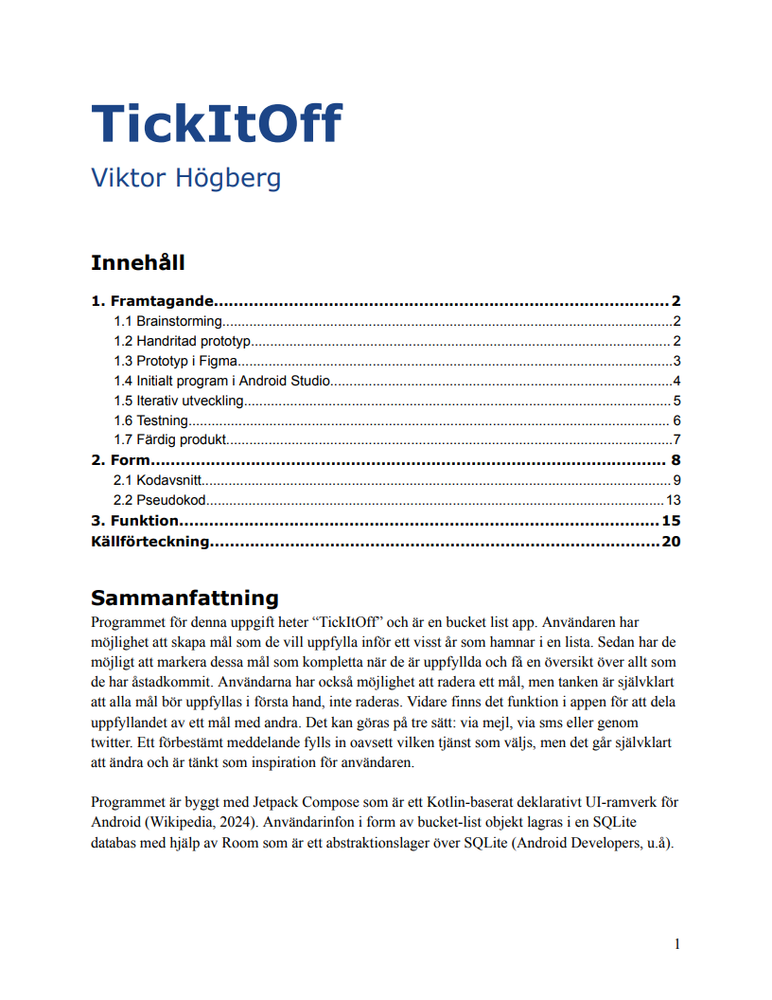
TickItOff: Dokumentation
Detta är dokumentation för projektet TickItOff, bucket list-appen som visas i projektdelen ovan.
Dokumentationen redogör för hela utvecklingsprocessen från idé och prototyp till färdig app, inklusive form, funktion och kod.
Den innehåller även kodavsnitt, pseudokod och reflektioner kring testning och iterativt arbete.
Öppna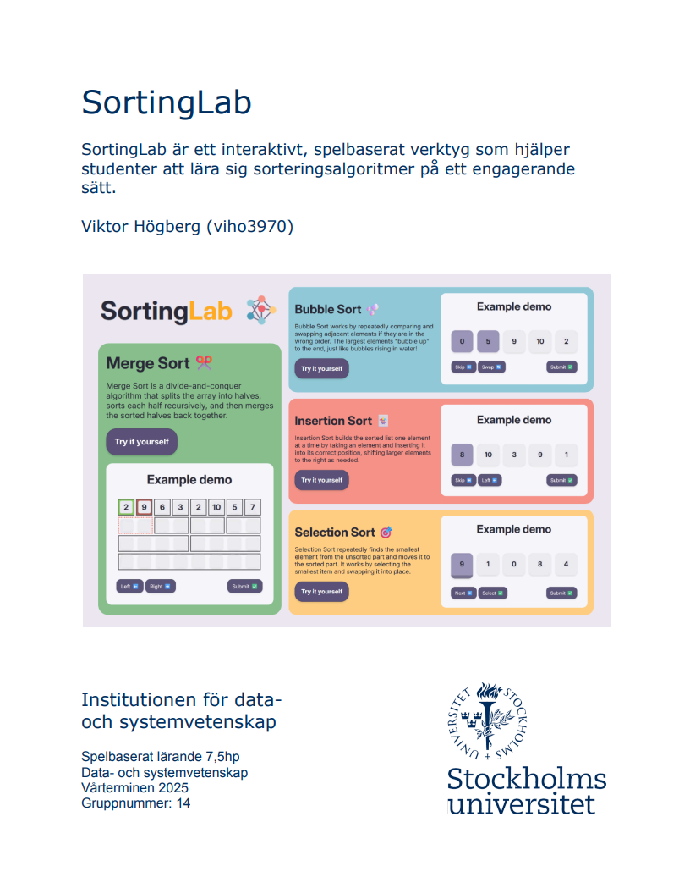
SortingLab: Dokumentation
Detta är dokumentation för projektet “SortingLab”, som visas i projektdelen ovan.
Dokumentationen redogör för spelets teoretiska förankring inom motivations- och designmodeller, samt innehåller en genomgång av centrala kodavsnitt och alternativa lösningar.
Teorier som ARCS-modellen, Self-Determination-teorin och MDA-ramverket används för att motivera designval och spelupplevelse.
Öppna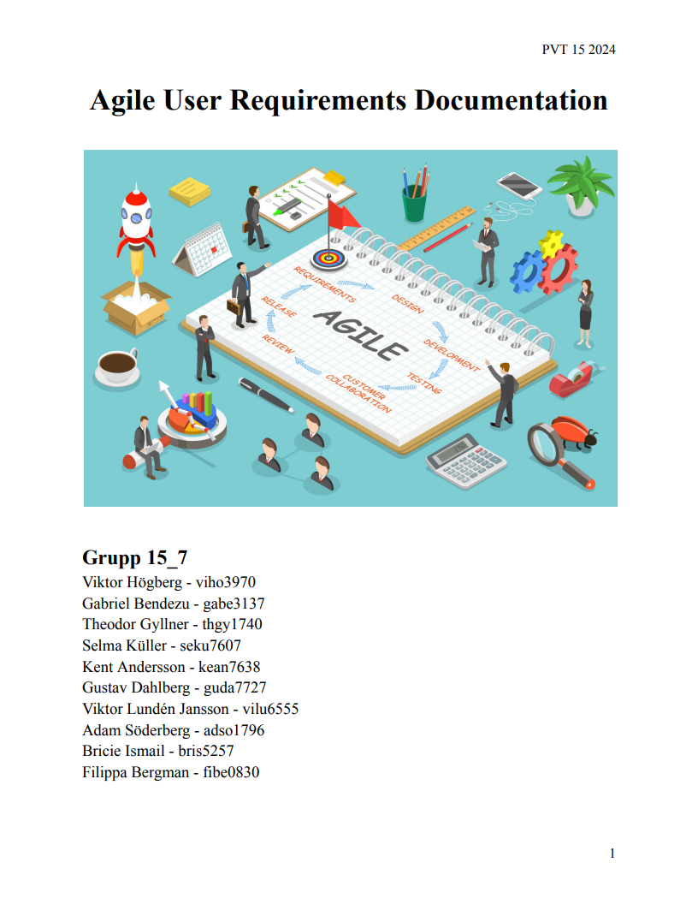
Midnattsloppet: Agil dokumentation
Detta är agil dokumentation för projektet Midnattsloppet Fortal som visas i projektdelen.
Dokumentationen redogör för hela utvecklingsprocessen från prototyper och användarscenarier till kravspecifikation, större beslut, användarflöden och UX-testning.
Den innehåller även analys av liknande lösningar, användarpersonas, diagram samt motiveringar bakom valda funktioner och förändringar under projektets gång.
Öppna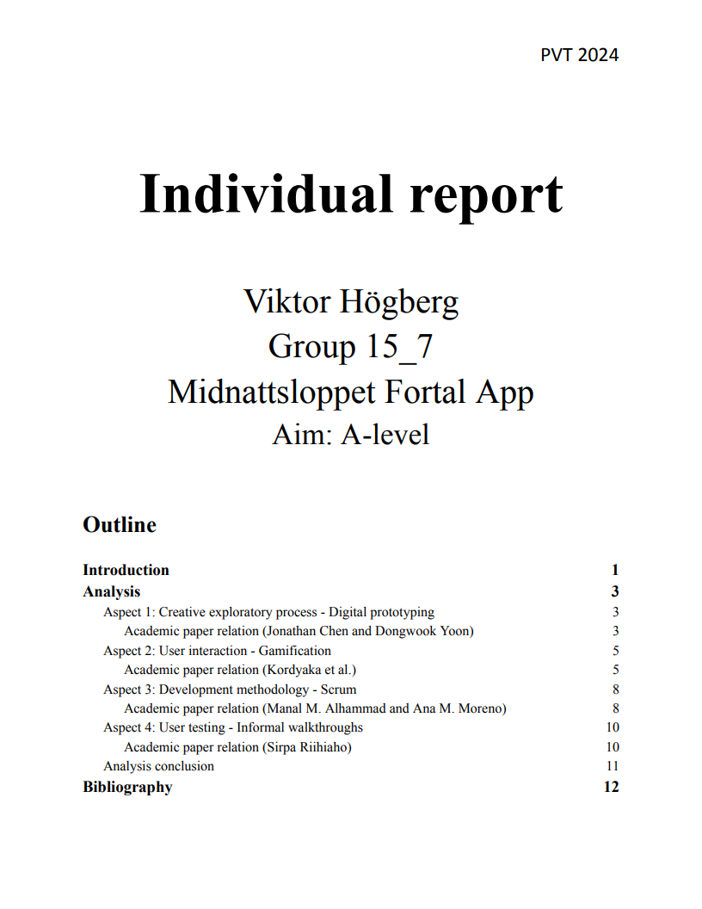
Midnattsloppet: Reflekterande rapport
Detta är en reflekterande rapport kopplad till Midnattsloppet Fortal.
Rapporten analyserar fyra centrala aspekter av projektet: digital prototypframställning, gamification, Scrum-metodik och användartestning, i relation till relevant akademisk forskning.
Syftet är att reflektera över projektets genomförande utifrån teori och praktik samt dra slutsatser kring lärdomar och utvecklingsmöjligheter.
Öppna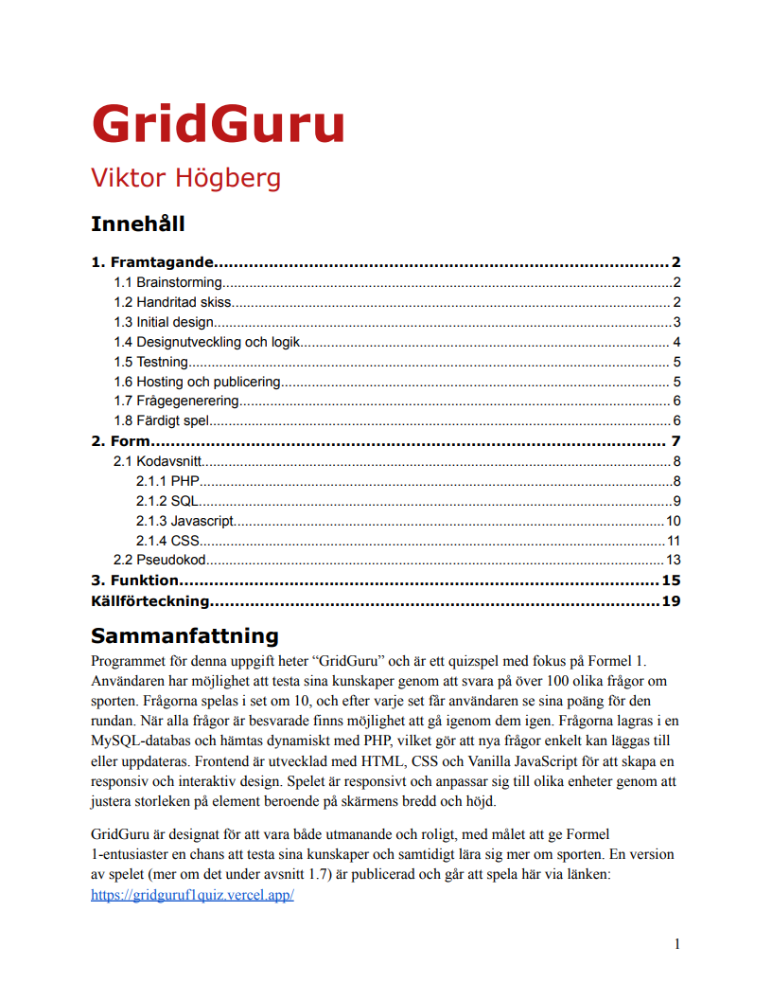
GridGuru: Dokumentation
Detta är dokumentation för GridGuru, som beskriver hela utvecklingsprocessen från brainstorming och skisser till design, testning, publicering och spelmekanik.
Den inkluderar även kodavsnitt i PHP, SQL, JavaScript och CSS samt pseudokod och en genomgång av spelets funktionalitet.
Öppna